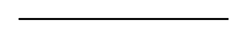
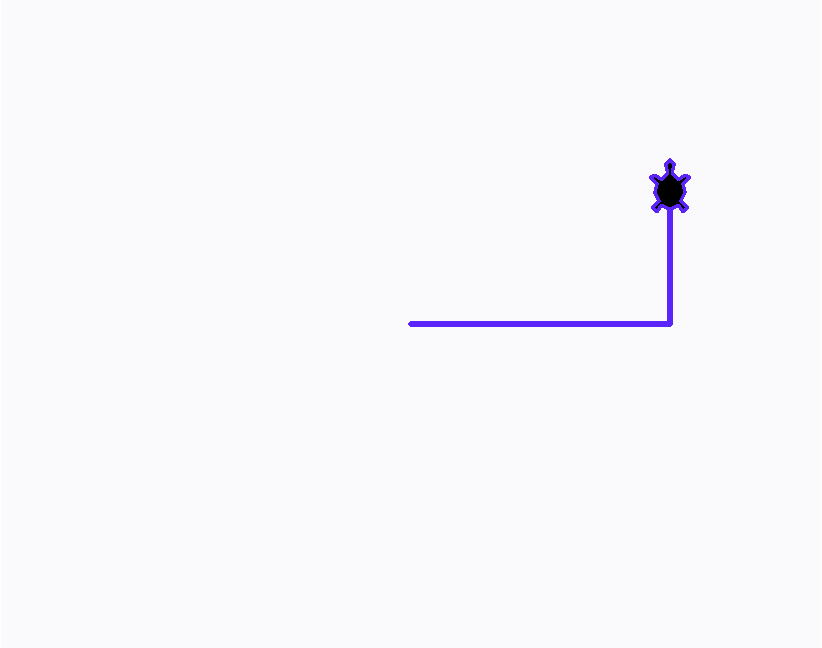

Глава 6 · Рисуем классные вещи с помощью Turtle
Цвет, толщина и внешний вид
Управляем тем, как выглядит линия и сама черепашка — и разбираемся, что speed() меняет, а что нет.
До сих пор мы рисовали фиолетовой линией по умолчанию. Пора научиться управлять тем, как именно выглядит рисунок — и как выглядит сама черепашка.
Толщина и цвет линии
tonkaya_chernaya.py
import turtle
screen = turtle.Screen()
screen.setup(width=380, height=200)
artist = turtle.Turtle()
artist.pensize(1)
artist.pencolor("black")
artist.forward(220)
screen.exitonclick()Результат выполнения

tolstaya_sinyaya.py
import turtle
screen = turtle.Screen()
screen.setup(width=380, height=200)
artist = turtle.Turtle()
artist.pensize(10)
artist.pencolor("#2563EB")
artist.forward(220)
screen.exitonclick()Результат выполнения
cvet_i_tolschina.py
artist.pensize(10)
artist.pencolor("#2563EB")
artist.forward(220)Цвет можно задавать по-разному
pencolor("blue") (имя цвета), pencolor("#2563EB") (шестнадцатеричный код, как в CSS) — оба варианта работают одинаково. Имена цветов проще запомнить, коды дают точный оттенок.Внешний вид черепашки и фон окна
vid_i_fon.py
import turtle
screen = turtle.Screen()
screen.setup(width=380, height=300)
screen.bgcolor("#FAFAFC")
artist = turtle.Turtle()
artist.shape("turtle")
artist.pencolor("#5B24F9")
artist.pensize(2)
artist.forward(120)
artist.left(90)
artist.forward(60)
screen.exitonclick()Результат выполнения

vid_kod.py
screen.bgcolor("#FAFAFC")
artist.shape("turtle") # вместо треугольника-стрелки — силуэт черепахи| Команда | Что меняет |
|---|---|
screen.title("...") | заголовок окна |
screen.bgcolor("...") | цвет фона |
artist.shape("turtle") | форма курсора черепашки |
artist.hideturtle() / showturtle() | скрыть/показать курсор (сама линия не исчезает) |
Скорость — это про анимацию, не про рисунок
artist.speed(0) ускоряет анимацию рисования до максимума
(0 — самая быстрая, 1 — самая медленная, 6 — обычная). Это касается только того,
как быстро линия появляется на экране, — итоговый рисунок будет совершенно
одинаковым что на скорости 1, что на скорости 0. Статичная картинка не может показать разницу
в скорости — её видно только вживую, при запуске кода.
skorost.py
artist.speed(0) # максимально быстро — удобно для сложных узоровПрактика: цвет, толщина и внешний вид
Модуль turtle открывает нативное окно Python — выполните локально в VS Code, PyCharm или Jupyter